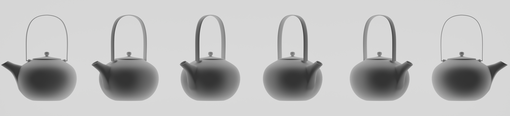

について
About
The Japanese tea ceremony (known as sadō/chadō (茶道, 'The Way of Tea') or chanoyu (茶の湯) lit. 'Hot water for tea') is a Japanese cultural activity involving the ceremonial preparation and presentation of matcha (抹茶), powdered green tea, the procedure of which is called temae (点前).
The term "Japanese tea ceremony" does not exist in the Japanese language. In Japanese the term is Sadō or Chadō, which literally translated means "tea way" and places the emphasis on the Tao (道). The English term "Teaism" was coined by Okakura Kakuzō to describe the unique worldview associated with Japanese way of tea as opposed to focusing just on the presentation aspect, which came across to the first western observers as ceremonial in nature.
In the 1500s, Sen no Rikyū revolutionized Japanese tea culture, essentially perfecting what is now known as the Japanese tea ceremony and elevating it to the status of an art form. He redefined the rules of the tea house, tea garden, utensils, and procedures of the tea ceremony with his own interpretation, introduced a much smaller chashitsu (tea house) and rustic, distorted ceramic tea bowls specifically for the tea ceremony, and perfected the tea ceremony based on the aesthetic sense of wabi.
Sen no Rikyū's great-grandchildren founded the Omotesenke, Urasenke, and Mushakōjisenke schools of tea ceremony, and the tea ceremony spread not only to daimyo (feudal lords) and the samurai class but also to the general public, leading to the establishment of various tea ceremony schools that continue to this day.
Zen Buddhism was a primary influence in the development of the culture of Japanese tea. Shinto has also greatly influenced the Japanese tea ceremony. For example, the practice of purifying one's hands and mouth before practicing the tea ceremony is influenced by the Shinto purification ritual of misogi. The architectural style of the chashitsu and the gate that serves as the boundary between the tea garden and the secular world have been influenced by Shinto shrine architecture and the torii (shrine gate).
Much less commonly, Japanese tea practice uses leaf tea, primarily sencha, a practice known as senchadō (煎茶道, 'the way of sencha').
Tea gatherings are classified as either an informal tea gathering chakai (茶会, 'tea gathering') or a formal tea gathering chaji (茶事, 'tea event'). A chakai is a relatively simple course of hospitality that includes wagashi (confections), thin tea, and perhaps a light meal. A chaji is a much more formal gathering, usually including a full-course kaiseki meal followed by confections, thick tea, and thin tea. A chaji may last up to four hours.